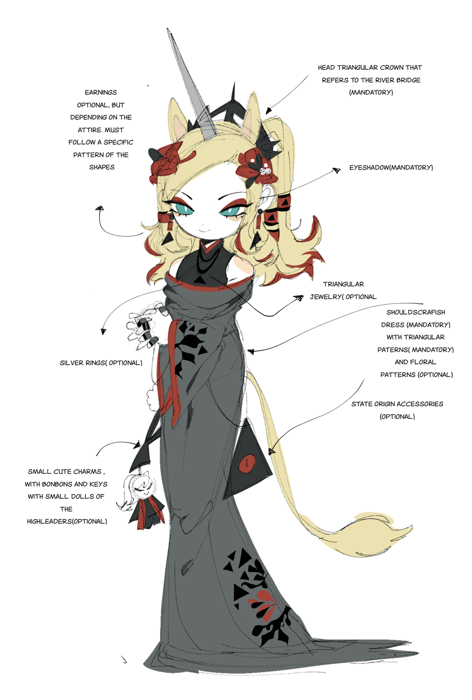
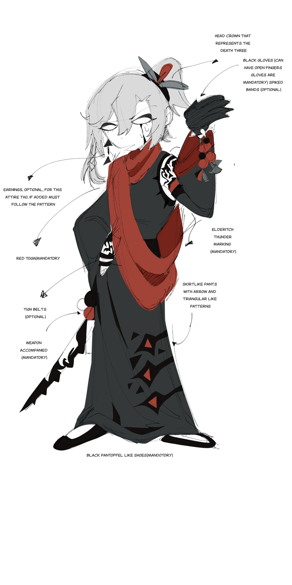

InformationType : World structure
realm: ALL


All species in the universe of Skullmare are divided in 4 catragories(Which are also called families):
Human
Mythical
Elderitch
Ethereal
Human
traits
-They have the traits of a normal human;
-human strength;
-Everything in how they behave is human;
-Humans cannot migrate between realms in normal circumstances;
-A human can migrate between worlds if a Mythical or an Elderitch brings
them
along;
-Humans have normal red blood
Elderitch traits
-All elderitch are based on the cosmic horror that is love craft;
-They have black blood;
-They have a triangle mark anywhere on their body that is either an
accessory
worn by a citizen or a tattoo on a worker;
-The high leader has a tattoo that tends to be on very delicate place, (such
as
the eye, tongue, heart);
-An Elderitch can regenerate, there's still a way to kill them and you do
that
by striking them on their triangle spot. ( A citizen however, can be killed
easily by anything and anywhere )
Example:
-You kill Heizenga by stabbing him trough the eye
-You kill Bermuda by stabbing him trough the mouth, or slitting his throat
-You kill Latavan by impaling him trough the heart
-You kill Boroque by stabbing trough the abdomen
Etc etc
They will die
◈ You could compare a normal elderitch citizen to a super human/monster
human;
◈ An elderitch is able to migrate between realms.
Mythical traits
-is based on a mythical entity;
-depending on the mythical entity they are is what their power is based on;
-a mythical entity can vary from blood compared to other entities
-a mythical entity can shape-shift to their original myth form
Example:
◈ an unicorn humanoid can shape-shift to that of a unicorn
◈ a sphinx ofc to that of a sphinx
◈ A mythical is mostly accompanied with an eternal weapon that
comes
within their anatomy or uses life energy to cast;
-Their habitat does exist, but is not ruled by anything, it is a free
land where the rules of the jungle prevail;
-Just like an Elderitch a Mythical can migrate from worlds;
Ethereal
traits
-The Ethereals are the highest power form;
-they do not look like normal Angels, the servants may look normal
but
their leader does not;
-They have wings
-All of the high leaders MUST have sclera eyes with white irises and
have golden cuff like bands on their hands;
-most Ethereal's aesthetics apply to either Greek or Roman culture
(such
as the toga, golden jewelry or olive strands);
-They are able to migrate trough realms;
-Their strength is incredible and have the power to create new
habitats
from scratch;
-Most high leaders have more limbs;
-As ALLHAIL having multiple arms and PRAISE have having multiple
wings,
a servant only has 2 wings;
-compared to the rest of the species who can migrate, they will need
a
specific transportation vehicle to go through worlds, however a high
leader Ethereal does not need a vehicle;
-An Ethereal always has the broken feature of a limb THAT needs to
be
SEEN;
-They have red blood.
Festival: Elderitch culture


note 1#
- both of the culteral attires are unisex, it can be worn by all genders
note 2#
- Theres more makeup being worn during this particular holiday
InformationType : Culture
realm: Elderitch
The Elderitch festival, or so called "Lovecraft festival" is a once in a
1000 year celebration ( counting it in human years ) where all the 3
districts from the world compete with one another;
You could compare the whole event to the greeks participating in the
olympics.
Each district leader holds an event or competition where all the workers can
compete in until the best group wins. The compettiton can be anything from
puzzles, riddles to athletics and particular knowledge on specific subjects.
Ocassionaly ties can occur, and when they do there is a 4th event that will
be hosted by a previous leader of any district: They will rise from the
depths of sand, and it will be a battle to the death, where again the
subject could be about anything the previous Elder chooses.
Note: The previous leaders of a district are reffered to as the "The Elders
Of The depths/The Elders"
The river bridge
In these particular attires showed in the illustration you can see a couple
of accessories which hold a deep meaning to the ones who have them. An
example is the "river bridge" which represents a legend where the black
waters are tinted of that color from the blood of the criminals getting
poured in. ( This legend is found in Bermuda's district, so the workers from
that district will be the ones wearing that charm. )
The death three
The death tree is actually a big cemetery for previous citizens and workers,
and it is rumored that wishes, luck and the dreams of any of the people
buried are held onto it.

 Copyright © 2024 Skullmare All rights reserved.
Copyright © 2024 Skullmare All rights reserved.  MANUAL
MANUAL